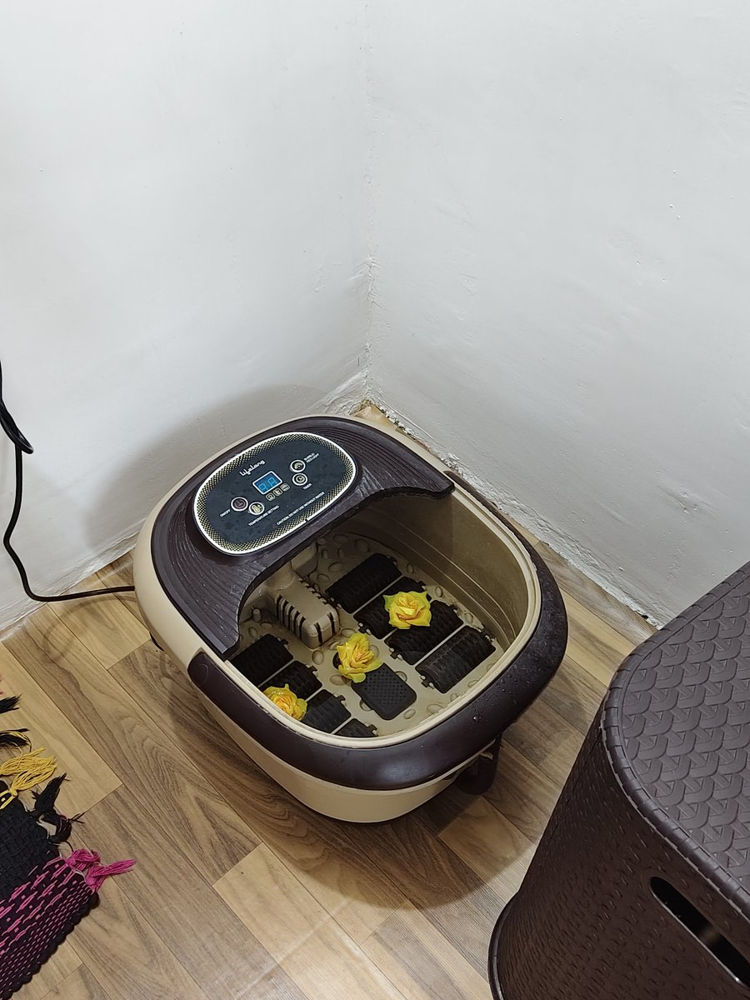

Best Foot Reflexology in Madurai
Doctor-guided clinical foot reflexology combining automated hydrotherapy foot spa immersion, deep neurological nerve-zone stimulation, and holistic meridian balancing by Dr. M. Mehraj Abdullah, M.D (Acu) in K.K Nagar, Madurai. Relieve heel pain, sciatica, digestive sluggishness, and chronic stress without pharmaceuticals.
Why Clinical Reflexology Outperforms Ordinary Foot Massage
Most foot massage centers in Madurai operate as commercial spas where untrained masseurs apply generic scented oils. At Balance & Bliss, foot reflexology is conducted as a certified non-drug clinical discipline to treat the neuro-visceral root cause of illness.
Clinical Foot Reflexology
- ✓ Doctor-Guided Care: Personal intake, pulse evaluation, and nerve zone mapping by Dr. M. Mehraj Abdullah, M.D (Acu).
- ✓ Hydrotherapy Foot Immersion: Heated bubbling spa basin to soften deep fascial tensions before manual therapy.
- ✓ 7,200+ Nerve Endings: Precision somatotopic point stimulation mapping directly to organs, spine, and hormonal glands.
- ✓ Integrative Modalities: Seamlessly combined with Acupuncture and Far-Infrared Jade Thermal Spinal Traction.
- ✓ Documented Medical Results: Relieves Plantar Fasciitis, Calcaneal Spurs, Sciatica, Gastritis, and Peripheral Neuropathy.
Ordinary Spa Foot Massage
- × Untrained Personnel: Non-credentialed workers applying random oil pressure without anatomical understanding.
- × No Diagnostic Evaluation: Zero review of medical history, pulse balance, spinal alignment, or visceral stress.
- × Surface-Level Rubbing: Temporary feel-good friction that wears off within 2 hours without treating pain causes.
- × Zero Medical Equipment: Lacks digital hydrotherapy basins or therapeutic spinal decompression beds.
- × No Chronic Care Protocol: Ineffective for genuine orthopedic, neurological, or visceral conditions.

How 7,200+ Nerve Endings Restore Your Whole Body
Human embryology reveals that the feet contain more than 7,200 sensory nerve endings that form closed neuro-electrical circuits connecting through the spinal cord to every major internal organ, hormone gland, and musculoskeletal joint.
When organs experience metabolic congestion or nerve root compression occurs in the lumbar or cervical spine, microscopic calcium and lactate deposits accumulate in corresponding reflex zones on the soles. Through Dr. Mehraj's precise clinical thumb palpation, these deposits are broken down, stimulating your central nervous system to trigger self-healing.
Our 4-Stage Foot Reflexology Experience
Every session at Balance & Bliss is structured through four progressive therapeutic phases, guaranteeing medical-grade sterility and deep relaxation.
Hydrotherapy Foot Spa Immersion
Feet are immersed in a digital temperature-controlled whirlpool basin infused with natural therapeutic minerals to dilate peripheral capillaries and soften tight plantar fascia.
Diagnostic Palpation & Pulse Reading
Dr. Mehraj conducts manual palpation of tender reflex zones, cross-referenced with your radial pulse and health history to identify functional root stresses.
Somatotopic Thumb-Walking Reflexology
Targeted rhythmic pressure applied across plantar, dorsal, and medial zones to clear energetic blockages, stimulate visceral organs, and release endorphins.
Thermal Spine & Meridian Integration
Optionally paired with our automated jade spinal decompression bed and classical meridian balancing for total neuromuscular homeostasis.
Conditions We Relieve with Foot Reflexology
Our specialized protocols have provided proven relief for over 200+ patients in Madurai suffering from both localized foot pain and systemic chronic disorders.
Heel Pain & Plantar Fasciitis
- • Sharp morning heel stabbing
- • Calcaneal bone spur pain
- • Plantar fascia tightness
- • Achilles tendon strain
Stimulating deep heel reflex arcs releases calf tension and restores healthy plantar microcirculation.
Sciatica & Lower Back Compression
- • Radiating buttock/leg pain
- • L4-L5 lumbar disc strain
- • Sacroiliac joint stiffness
- • Muscle spasms when sitting
The medial foot arch reflects the complete lumbar spinal column, releasing pinched sciatic roots naturally.
Diabetic Neuropathy & Numbness
- • Tingling "pins and needles"
- • Loss of sole sensitivity
- • Burning foot sensations
- • Cold feet circulation issues
Re-activates dormant peripheral sensory pathways and boosts arterial capillary perfusion in the feet.
Chronic Stress & Severe Insomnia
- • Racing thoughts & restlessness
- • Inability to enter deep sleep
- • Tension headaches & migraines
- • Sympathetic nervous overdrive
Stimulating solar plexus and pineal gland points shifts your body instantly into deep parasympathetic healing.
Suffering from Persistent Heel Pain or Chronic Fatigue?
Experience authentic clinical foot reflexology guided personally by Dr. M. Mehraj Abdullah in K.K Nagar, Madurai.
Google Reviews for Foot Reflexology
Verified feedback from patients treated by Dr. M. Mehraj Abdullah, M.D (Acu) in K.K Nagar, Madurai.
"Felt a Soothing feeling and pampering in a best way to heal naturally."
"I suffered from severe morning heel pain due to plantar fasciitis for nearly six months. Just three sessions of clinical foot reflexology with Dr. Mehraj in K.K Nagar completely eradicated the stabbing sensation. Truly miraculous non-drug healing!"
"The digital foot hydrotherapy basin combined with Dr. Mehraj’s precise thumb pressure on my foot reflex points relieved my chronic lower back stiffness after a long week of IT desk work. The clinic is quiet, spotlessly clean, and parking right outside is effortless."
Dr. M. Mehraj Abdullah, M.D (Acu)
ATAMA Reg. No: 20261714 / TN • Certified Drugless Medicine SpecialistWith over 4+ years of dedicated clinical practice and 200+ documented patient recoveries across Madurai, Dr. M. Mehraj Abdullah is passionate about helping patients regain pain-free mobility without dependency on toxic pharmaceuticals or invasive surgery.
As Founder and Director of Balance and Bliss Healing Therapies and Academy, Dr. Abdullah also conducts accredited certification workshops in Foot Reflexology, Sujok, and Classical Acupuncture, mentoring students and practitioners across Tamil Nadu.

Frequently Asked Questions About Foot Reflexology in Madurai
Unlike commercial beauty spas or unisex salons where untrained staff offer simple foot rubs, Balance & Bliss is a specialized drugless medical clinic directed by Dr. M. Mehraj Abdullah, M.D (Acu), registered under ATAMA (Reg. No: 20261714 / TN). Every session integrates automated warm hydrotherapy foot spa immersion, deep diagnostic palpation of 7,200+ neurological nerve endings, and personalized meridian therapy to heal the root cause of chronic physical pain.
An ordinary foot massage merely rubs surface muscles for temporary relaxation. Clinical foot reflexology is an anatomical neuro-reflex science: the soles and tops of the feet represent a complete micro-map of the entire human body. By applying targeted thumb-walking pressure on specific reflex zones, Dr. Mehraj stimulates the central nervous system, widens pelvic and spinal circulation, and triggers healing in corresponding visceral organs.
Yes. Foot reflexology is one of the most effective non-surgical therapies for plantar fasciitis and calcaneal heel spurs. Our protocol breaks down micro-adhesions in the plantar fascia ligament, improves venous blood flow, and releases deep trigger points across the Achilles tendon and calf muscles, offering lasting relief without painkiller injections.
We are conveniently located at B6/17 Housing Board Colony, K.K Nagar, Madurai 625020, near the Annanagar Police Station and directly opposite Ibaco. We provide dedicated, hassle-free on-premises parking for both cars and two-wheelers in a serene residential neighborhood.
Acute muscle fatigue and mild foot soreness typically experience immediate relief within 1 to 2 sessions. For chronic conditions such as lumbar sciatica, cervical stiffness, diabetic neuropathy, or severe heel spurs, a structured series of sessions under Dr. Mehraj's personalized care plan is recommended to achieve lasting neuro-muscular stabilization.
Yes. To preserve a peaceful, unhurried, and confidential clinical experience with zero waiting times, all reflexology sessions are scheduled on a prior appointment basis through WhatsApp (8838452088) or phone call (9842251844).
Padha Sigichai (பாத சிகிச்சை) is the traditional Tamil term for clinical foot healing therapy. At Balance & Bliss, we combine this ancient heritage with modern neurological reflex zone knowledge and hygienic hydrotherapy equipment to provide the most authentic, effective treatment in Madurai.
Schedule Your Foot Reflexology Today
B6/17 Housing Board Colony, K.K Nagar, Madurai 625020 • Near Annanagar Police Station, Opposite Ibaco • Dedicated Parking Available